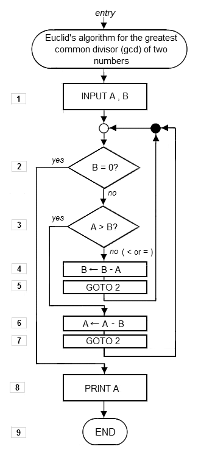

Introduction à la programmation
Aymeric LAMBOLEY


Parcours
Formation
- IUT SRC Montbéliard (ex-MMI)
- Université de Technologie de Belfort-Montbéliard
- Les Gobelins, l'école de l'image à Annecy
Professionnel
- Développeur Web (Flash)
- Freelance
- Gérant à Da Viking Code
Da Viking Code
Société de programmation pour applications interactives et ludiques.
- 6 programmeurs
- Jeux videos (mobile, desktop, web)
- Applications mobiles
- Installations interactives : VR & AR
Technologies
- Unity 3D
- WebGL - Pixi.js - Three.js
- Laravel
- Processing
- Haxe
- Adobe AIR
- Unreal Engine
Références
Sommaire
- À l'origine, l'algorithmie
- La programmation
- La programmation c'est fun
- Le pseudo code
- Les langages
- Le compilateur
- Processing
- Les variables et types
- Les conditions
- Les boucles
- Les tableaux
- Les functions
L'algorithmie
Le mot « algorithme » vient du nom du mathématicien Al-Khwârizmî (latinisé au Moyen Âge en Algoritmi), qui, au IXe siècle écrivit le premier ouvrage systématique donnant des solutions aux équations linéaires et quadratiques. « Algorithme » a donné « algorithmique ». On trouve aussi le synonyme « algorithmie », vieux mot utilisé par exemple par Wronski en 1811.
Les premiers algorithmes remontent au IIIe millénaire av. J.-C. Ils décrivent des méthodes de calcul et des résolutions d'équations à l'aide d'exemples.
Qu'est-ce qu'un algorithme ?
Qu'est-ce qu'un algorithme ?
Un algorithme représente une suite finie et non ambiguë d'instructions.
Les algorithmes sont partout : de la recette de cuisine au GPS.
L'algorithme d'Euclide
Exercices
- Écrire un algorithme qui demande
Qu'est-ce que la programmation ?
“Il n’y aura bientôt plus que deux types de personnes sur Terre, ceux qui donneront des ordres à l’ordinateur et ceux à qui l’ordinateur dira ce qu’ils doivent faire.” - Marc Andreessen